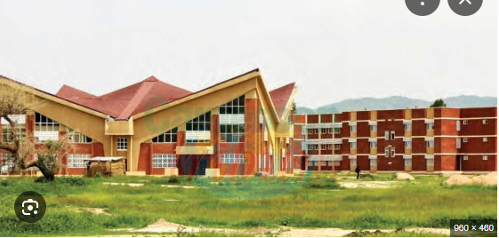

|

|
IUT de Maroua
Présentation de l'IUT de Maroua
L'école nationale supérieure polytechnique de Maroua (ENSPM); elle a vu le jour grace au décret présidentiel N°2008/280 du 9 aout 2008, elle est située à Kongola à Maroua Cameroun ayant à sa tete le Recteur Monsieur Idrissou ALIOUM. Elle est centrée sur la mise sur la professionnalisation et la numérisation des enseignements. C'est une formation ancrée sur l'orientation technologie et professionnelle. L'objectif étant de former des cadres techniques et scientifiques pour le developpement de la région et du pays./p>
|